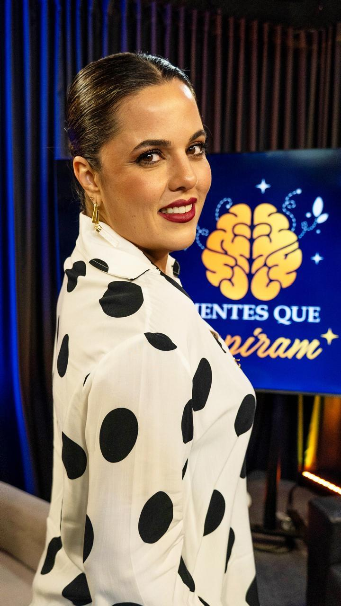
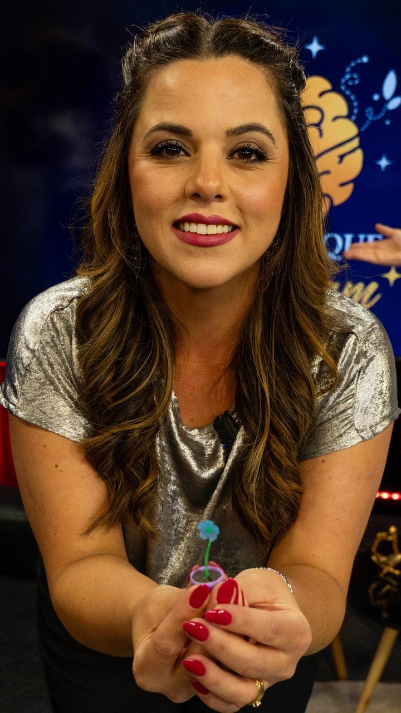
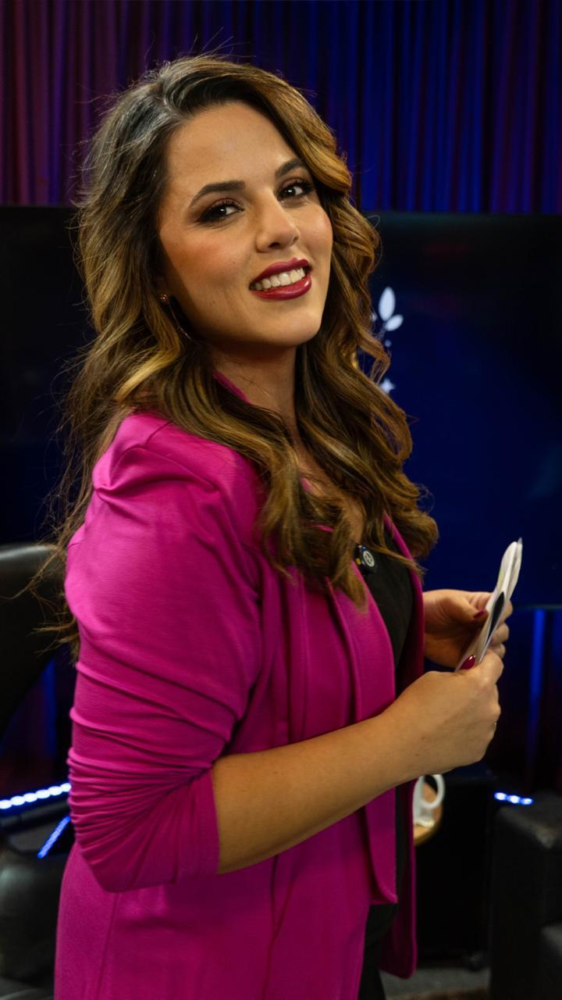
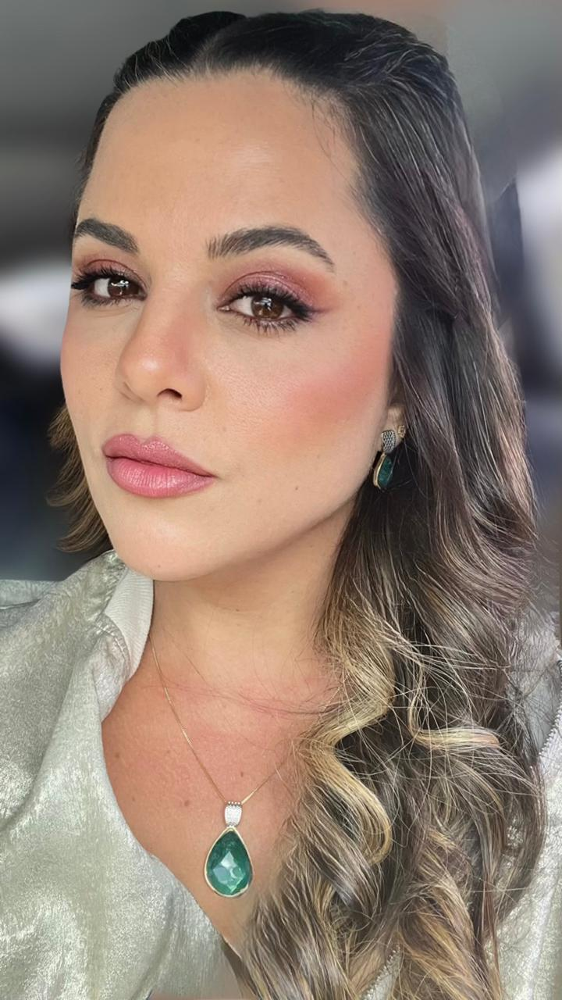
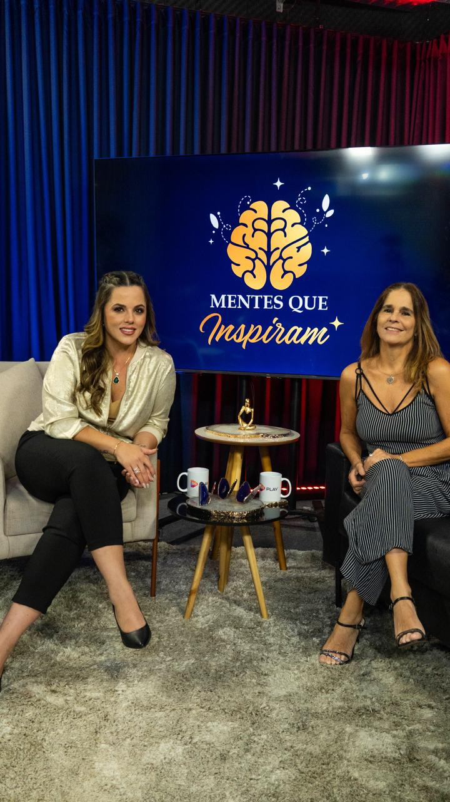
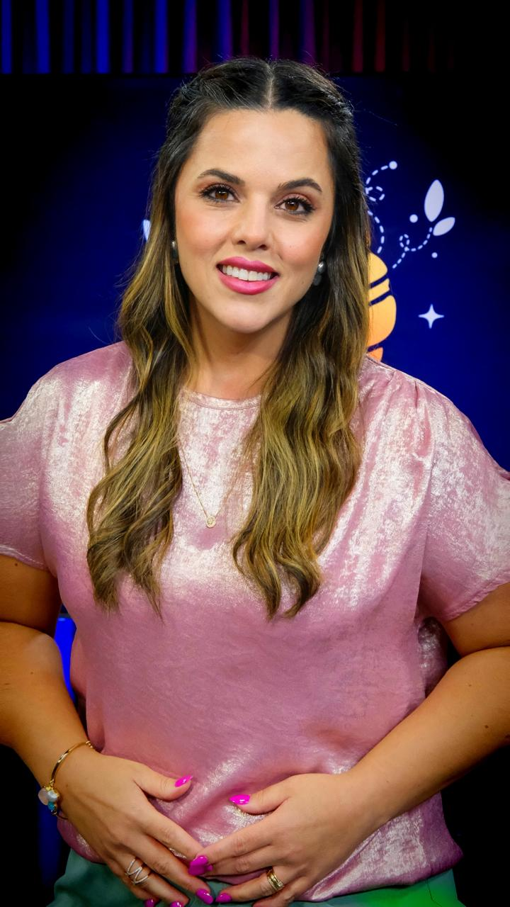
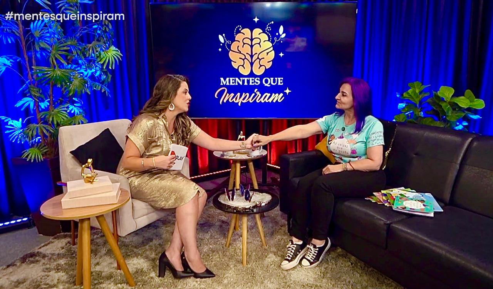

Media Kit Oficial
Com Vanessa Sanceverino Esteves
"Conteúdo com propósito, elegância e impacto."

Gestora educacional, comunicadora e idealizadora do programa. Com trajetória sólida construída na educação, na liderança pedagógica e na comunicação com propósito, Vanessa conduz entrevistas que unem profundidade, sensibilidade e relevância social.
Sua presença em cena traduz a essência do projeto: escutar com inteligência, comunicar com elegância e transformar conversas em conteúdo que inspira, informa e gera impacto real.
"Porque toda conversa que toca a essência também pode transformar realidades. O Mentes que Inspiram nasce da força das ideias, da escuta e das histórias que ampliam o olhar sobre o mundo. É um espaço onde conhecimento encontra sensibilidade, e onde cada entrevista é um convite à reflexão, à consciência e à ação."
Um espaço de entrevistas voltado a conversas que geram valor, consciência e impacto. Com linguagem sofisticada e acessível, aborda temas contemporâneos conectando especialistas, educadores e histórias inspiradoras.
Reflexões sobre aprendizagem, gestão educacional, neuroeducação, práticas pedagógicas e o futuro da educação.
Pautas que ampliam o debate sobre acessibilidade, autismo, maternidade atípica, equidade e pertencimento.
Comportamento, saúde emocional, relações humanas, carreira, propósito e bem-estar.
Trajetórias, experiências e visões que mobilizam, ensinam e inspiram transformação verdadeira.
O programa trata de assuntos atuais, necessários e de alto valor para a sociedade.
A condução da apresentadora equilibra perfeitamente acolhimento, inteligência e autoridade.
Forte apelo visual e posicionamento elegante, fortalecendo a percepção de valor no mercado.
O conteúdo aproxima, sensibiliza e gera uma identificação genuína e duradoura com o público.
Cada episódio se desdobra em cortes, reels, chamadas, bastidores e conteúdos de alto potencial de alcance.
Mais de 2.15 Milhões de Visualizações
Dados consolidados em apenas 6 meses de criação do projeto.
Alcance Orgânico Massivo
Visualizações no Instagram
Destaque: O alcance do perfil para não-seguidores é extremamente expressivo, chancelando um alto poder de viralização e entrega orgânica do conteúdo.
Crescimento Acelerado (Analytics)
Visualizações
Inscritos Fiéis
Alta Retenção de Público
Ex: Maternidade Atípica & Autismo
Pautas profundas que geram alta conexão e compartilhamento.
Audiência multiplataforma sólida da emissora RS Play, com forte engajamento e retenção.
5 Milhões
Audiência Mensal
17h - 23h
Horário de Pico
Alto Engajamento
Retenção e Interações
Dados Recentes
224.8K
Visualizações
7.9K
Horas
+1.3K
Novos Inscritos
Performance Digital
876.4K
Alcance
33.6K
Interações
+1.0K
Novos Seguidores
Crescimento Viral
46K
Visualizações
1.5K
Curtidas
39
Compartilhamentos
Histórias reais, autoridade e impacto visual.






Dialogamos com um público que busca conteúdo com profundidade, qualidade e propósito.
Um ambiente seguro, elegante e altamente conectado a valores contemporâneos.
Inserção orgânica e sofisticada da sua marca no cenário e em elementos visuais do programa.
Menção qualificada da apresentadora durante o conteúdo de maior retenção.
Exposição estendida nos cortes, reels, chamadas e cards de alta performance no Instagram/YouTube.
Projetos, quadros ou episódios especiais desenhados conforme o objetivo estratégico da sua marca.
Associe sua imagem à educação, credibilidade, responsabilidade social e impacto positivo.
O Mentes que Inspiram é um programa de entrevistas apresentado por Vanessa Sanceverino Esteves. Com uma proposta editorial elegante e relevante, soma mais de 2.156.382 visualizações consolidadas entre Instagram e YouTube, reforçando seu potencial de alcance e valor para marcas que desejam se posicionar com propósito.